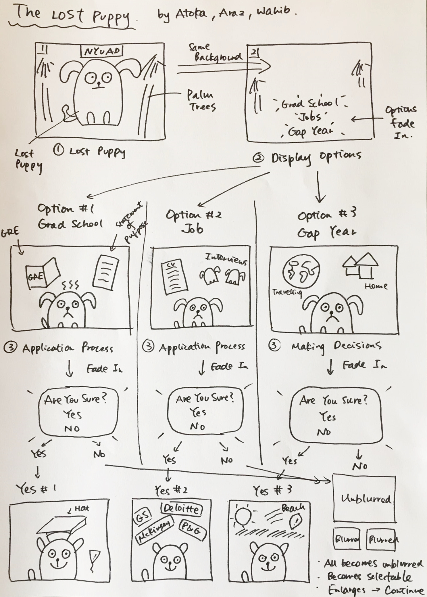

The Lost Puppy comic aims to illustrate the struggles of a college senior as they try to find their way into the real world. With an artsy yet academic visualization, the comic shows the puppy in various decision-making scenarios and the subsequent consequence(s) of that decision. The viewer is first presented with the context of a confused puppy, and is asked to make the decision: what should the puppy do after graduation? The choices include going to graduate school, finding a job, or taking a gap year. Through interactive panels, the struggle of the option initially chosen by the user are laid out. As the viewer advances, they are asked again about their choice and at the end the puppy is happily at the position the viewer wants it to be. The idea of this comic was not only to stress about the complications involved in post-grad decision making, but also to tell the broader story that it is completely fine if you are unsure about what you want to do in your life after college. By using interactive techniques such as buttons and the fade-in effect as well as the panels in between showing the puppy giving advice, the comic is designed in such a manner so that the viewer gets engrossed in the overall flow of the story and imagines themselves in the puppy's position when asked to make a decision.
Wahib, along with two seniors, Atoka and Araz, was brainstorming ideas for the comic. The group decided to showcase the struggles of being a senior by using a puppy as the subject (which adds a light tone to the comic). Araz and I were throwing in suggestions about how we can go about implementing the idea while simultaneously making the comic interactive to the user. Atoka, considering all the suggestions, drafted a basic wireframe for the comic. The finalized wireframe is shown below:
We knew that Atoka was the person for the drawings of the comic. Araz was an expert on JavaScript so she pitched in ideas about the transitions. I was constantly trying to figure out the positioning of the comic frames - how many frames to display, where to display, and what to display when. To do that, pictures of frames were taken and cropped from the basic wireframe. These pictures were then put on the web and various attributes of CSS and JavaScript were tested. For example, initially it was decided to add blur and unblur to some particular frames. It turned out to be somthing like this:
However, the realization came soon after that transitioning with the blur requires a lot of time as well as technical expertise. Hence, instead we decided to go with the classic-styled buttons. Meanwhile, Atoka was done drawing the first set of coomic panels. Using those panels, positioning - absolute, relative, flex - was tested and the fade-in effect was implemented. The last few modifications were done to enhance user interactivity, which included the 'NEXT' button, adjusting the fonts and the background colors, as well as the hover-over effect on certain images. A screenshot of one of the finalized panels from the comic is shown below:
'The Lost Puppy' is my first ever take on working with visualization effects and webpage development. I got exposed to a variety of JavaScipt attributes for interactivity as well as image editing softwares in order to tone the comic panels accroding to the website. The overall design of the comic looks simple yet immersive, and is effective in conveying the story we had initially planned. However, given the time constraints, we could not implement some features such as blurring the panels and transitioning between them by switching etc. Although there is room for improvement in terms of overall design and interactivity, the goals we had set for the basic structure of the comic were successfully implemented and the final working version of the comic is an accurate representation of the work we put in.